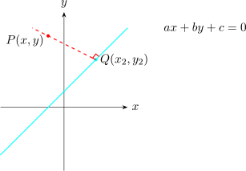
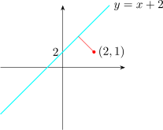
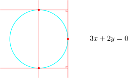

22.3 The Distance of a Point from a Line
Another common problem in coordinate geometry is in determining the distance of a point from a
line.

To calculate the distance from a point \(P(x,y)\) to a line \(L\), you find the point \(Q(x_2,y_2)\) at the foot of the perpendicular
from \(P\) to \(Q\) and calculate the distance from \(P\) to \(Q\).
Find the distance from point \((2,1)\) to the line \(\hspace {0.2cm} L :\hspace {0.1cm} y = x + 2\)

The gradient to the given line is \(m = 1\). Gradient of the perpendicular \((2,1)\) is \(m_1 = -1\).
\(\therefore \hspace {0.2cm}\) The equation of the line perpendicular to \(\hspace {0.2cm} y = x + 2\hspace {0.2cm}\) from \((2,1)\) is
\[y - 1 = -1(x -2)\] \[\implies \hspace {0.3cm} y = 3 - x \hspace {0.4cm}\cdots \hspace {0.4cm} (2)\]
\begin {align*} \text {Now}\hspace {0.5cm} y & = 2 + x \hspace {0.4cm}\cdots \hspace {0.4cm} (1)\\ y & = 3 - x \hspace {0.4cm}\cdots \hspace {0.4cm} (2) \end {align*}
\begin {align*} x + 2 & = 3 - x\\ \implies \hspace {0.3cm} 2x & = 1 \implies x = \dfrac {1}{2}\hspace {1cm}\text {and}\hspace {1cm} y = \dfrac {1}{2} + 2 = \dfrac {5}{2} \end {align*}
\(\therefore \hspace {0.5cm} \Big (\dfrac {1}{2},\dfrac {5}{2}\Big )\hspace {0.4cm}\) and \(\hspace {0.3cm} (2,1)\) \begin {align*} d & = \sqrt {\Bigg (2 - \dfrac {1}{2}\Bigg )^2 + \Bigg (1 - \dfrac {5}{2}\Bigg )^2} = \sqrt {\dfrac {18}{4}}\\ & = \dfrac {3}{2}\sqrt {2}\\\\ \end {align*}
Another method for finding the distance from a point to a line is by the use of the formula, given the equation of the line \(L\hspace {0.2cm}\hspace {0.2cm} ax + by + c = 0\) and a point \((m,n)\) then the distance from \(P\) to \(L\) is given by \[ d = \dfrac { \left |am + bn + c\right | }{\sqrt {a^2 + b^2}}\]
- 1.
- Find the distance of each of the given points from the line \(\hspace {0.3cm} 2x + 3y - 6 = 0\) \[(\text {a}) \hspace {0.3cm} (1,3)\hspace {0.2cm}, \hspace {1cm} (\text {b}) \hspace {0.3cm} (-3,4)\hspace {0.2cm}, \hspace {1cm} (\text {c}) \hspace {0.3cm} (4,-2)\]
- 2.
- Find the equation of the tangents to the circle \(\hspace {0.3cm} x^2 + y^2 - 4x - 2y - 8 = 0\hspace {0.3cm}\) which is parallel to the line \(\hspace {0.3cm} 3x + 2y = 0\)
- 3.
- Find the equation of the tangents to the circle \(\hspace {0.3cm} x^2 + y^2 + 4x + 8y - 5 = 0\hspace {0.3cm}\) which is parallel to the line \(\hspace {0.3cm} 4y - 3x = 0\).
Show that the line \(\hspace {0.3cm} 3x + 2y = 0\hspace {0.3cm}\) touches the circle \(\hspace {0.3cm} x^2 + y^2 + 6x + 4y = 0\hspace {0.3cm}\) and find the equation of the perpendicular tangents.
Solution.
Make \(y\) the subject in the equation of the line and substitute in the equation of the circle, \[3x + 2y = 0 \hspace {0.3cm}\implies \hspace {0.3cm} y = \dfrac {-3x}{2}\]
\begin {align*} \therefore \hspace {0.5cm} x^2 + \Bigg (\dfrac {-3x}{2}\Bigg )^2 + 6x + 4 \Bigg (\dfrac {-3x}{2}\Bigg )& = 0 \\ x^2 + \dfrac {9x^2}{4} + 6x - 6x & = 0 \end {align*}
\[x^2\Big ( 1 + \dfrac {9}{4}\Big ) = 0 \hspace {0.4cm} \implies \hspace {0.4cm} x = 0\]
\(\therefore \hspace {0.5cm} y = 0\hspace {1cm} [0,0]\)

Questions on this section
Stuck on something here? Ask below and it stays attached to this topic.